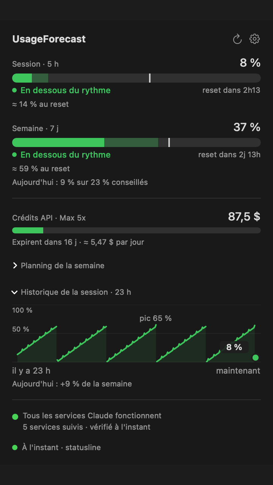
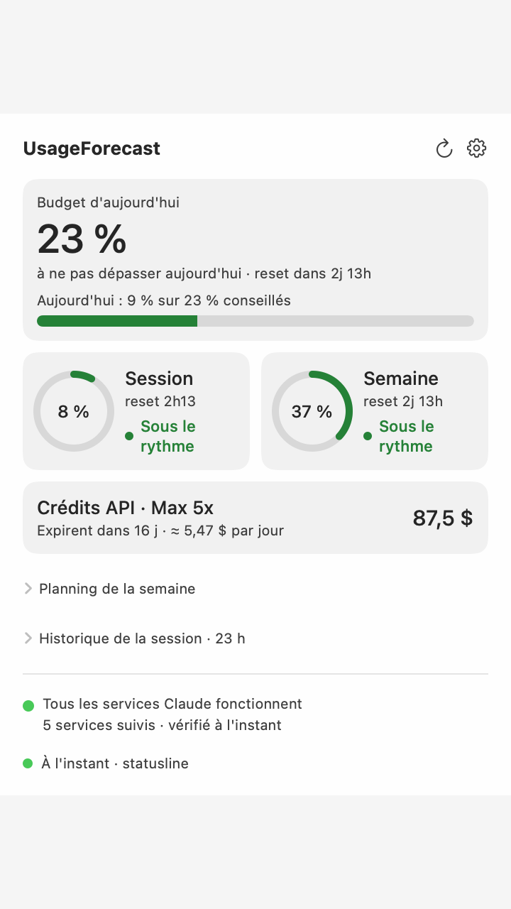
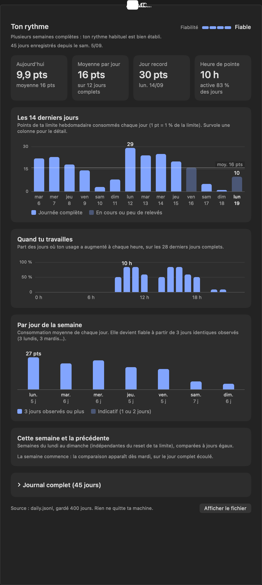
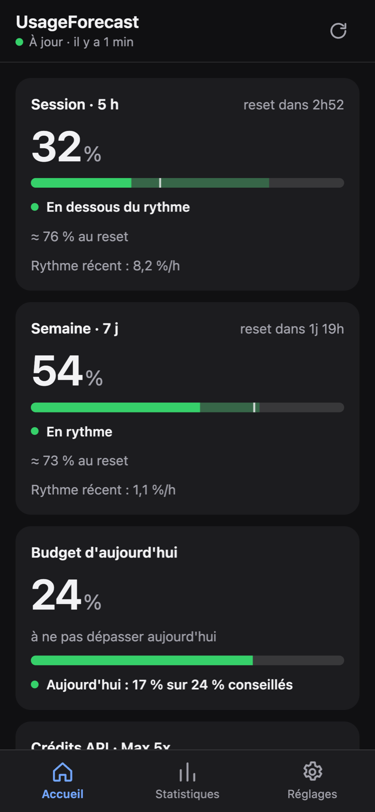

Ne tombe plus à court de Claude en pleine tâche.
UsageForecast affiche tes limites dans la barre de menu du Mac et te dit où tu en seras : fin de semaine, budget du jour, heure d'atteinte de 100 %. Avec des alertes claires et une app pour ton téléphone.
Télécharger l'APK Android
- macOS 13+, Apple Silicon
- Empreinte SHA-256 vérifiée
- Licence MIT
- Aucune télémétrie
- Application Android


Un compteur qui regarde devant
Savoir que tu es à 37 % ne sert à rien si tu ne sais pas où ça mène. UsageForecast répond à la vraie question.
Sans UsageForecast
- Ouvrir claude.ai/settings pour voir tes limites
- Découvrir la limite quand elle te coupe
- Deviner si ton rythme de la semaine tient
- Aucune trace de tes habitudes
Avec UsageForecast
- Tes limites toujours visibles dans la barre de menu
- Une alerte avant la limite, avec l'heure du reset
- « 9 % utilisés sur 23 % conseillés » pour aujourd'hui
- Un historique et des statistiques par jour de la semaine
Prévisions et budget du jour
Au rythme actuel, tu finis la session à combien ? la semaine à combien ? Un repère sur chaque jauge montre si tu es en dessous ou au-dessus du rythme.
- Estimation à la fin de la session et de la semaine
- Heure à laquelle tu atteindrais 100 %
- Planning de la semaine, jour par jour
- Alertes explicites : seuil, rythme trop rapide, limite atteinte

Ton rythme, en clair
Un journal quotidien gardé 400 jours et des statistiques par jour de la semaine : quand tu travailles, quand tu consommes, comment cette semaine se compare aux précédentes.
- Courbe minute par minute sur 24 h
- Moyennes par jour, seulement avec assez de données
- Crédits API et dépense du mois (Max et Team)
- Application Android : APK avec widget et mises à jour intégrées, synchro chiffrée


Ton usage aussi sur Android
Les mêmes écrans que sur le Mac, dans ta poche : jauges, prévisions, budget du jour, historique et statistiques. Tout transite chiffré par un relais que tu héberges toi-même, et la clé est gardée dans le coffre sécurisé d'Android.
- Un widget d'écran d'accueil : session et semaine, mis à jour en arrière-plan
- Mises à jour dans l'application : elle trouve la nouvelle version, vérifie son empreinte et l'installe
- Les mêmes écrans que sur le Mac : jauges, prévisions, planning de la semaine, historique, statistiques
Installer en 3 étapes. 1. Télécharge l'APK. 2. Autorise ton navigateur à installer des applications quand Android le demande. 3. Colle le lien d'association affiché par UsageForecast sur ton Mac (Réglages, Mobile).
Hors Play Store : à l'installation, Android te demande d'autoriser les sources inconnues pour ton navigateur. L'empreinte SHA-256 est publiée à côté du fichier. Tu préfères sans APK ? La même application s'installe depuis le navigateur, depuis l'adresse de ton relais.
Tes données restent chez toi
Pas de compte, pas de serveur du projet, pas de télémétrie. Le code est ouvert : tu peux tout vérifier.
Source officielle d'abord
Avec Claude Code, l'app lit les limites que Claude Code transmet à son statusline : ni cookie, ni réseau.
Cookies dans le trousseau
Si tu passes par claude.ai ou la Console, les cookies vont dans le trousseau macOS, jamais dans un fichier ni un journal.
Téléphone chiffré de bout en bout
Synchro désactivée par défaut. Activée, tout est chiffré (AES-256-GCM) sur ton Mac : le relais, que tu héberges toi-même, ne voit que du texte chiffré.
Prêt en trois minutes
Une commande, un choix, c'est tout.
Installe
Colle la commande dans le Terminal. L'archive est vérifiée avant d'être installée, l'icône apparaît dans la barre de menu.
Choisis ta source
L'assistant de démarrage te propose le réglage Claude Code à copier, ou ton compte claude.ai.
Laisse-le veiller
Active les alertes et, si tu veux, la synchro mobile. Les mises à jour se font en un clic.
Questions
Les réponses courtes.
C'est vraiment gratuit ?
Oui. Le code est ouvert, sous licence MIT. Le relais mobile tient dans l'offre gratuite de Cloudflare (environ 300 écritures par jour pour 1 000 autorisées).
Ça marche sans Claude Code ?
Oui, avec le cookie de ta session claude.ai collé dans les Réglages. L'assistant de démarrage t'explique les deux voies.
Et sur Android ?
Oui : télécharge l'APK sur cette page. Il contient l'application, un widget d'écran d'accueil et la mise à jour intégrée (Réglages, Mises à jour). Tu peux aussi installer la version web depuis le navigateur de ton téléphone. Dans les deux cas, elle se connecte à ton propre relais chiffré.
Comment mettre à jour l'application Android ?
Depuis l'application : Réglages (appui long sur Retour), puis « Mises à jour ». Elle télécharge l'APK de la dernière version depuis GitHub, vérifie son empreinte SHA-256 et lance l'installation. Android demande une confirmation, et une autorisation la première fois.
Et sur Windows ou Linux ?
Pas pour l'instant : l'app vit dans la barre de menu de macOS.
Pourquoi macOS me demande un mot de passe après une mise à jour ?
Les versions ne sont pas notarisées par Apple : le certificat est auto-signé, donc macOS redemande l'accès au trousseau à chaque nouvelle version. Un compte développeur Apple le supprimerait.
Comment désinstaller ?
Dans le Terminal : curl -fsSL https://alane38.github.io/usageforecast/install.sh | sh -s -- --uninstall. L'app va à la Corbeille et tes données restent ; ajoute --purge pour les mettre aussi à la Corbeille.
Est-ce un produit d'Anthropic ?
Non. Ce projet n'est ni affilié à Anthropic ni approuvé par Anthropic. Il s'appuie sur des points d'accès internes qui peuvent changer sans préavis.
Garde un œil sur ta limite, sans y penser
Une commande, et ta barre de menu te dit où tu en es et où tu vas.